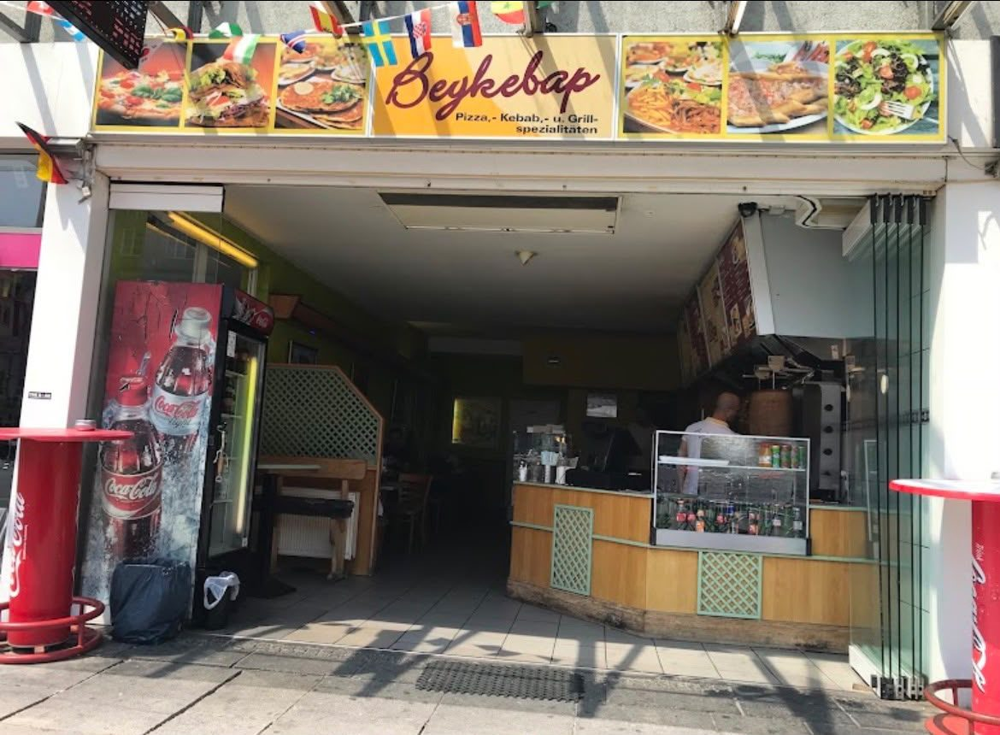
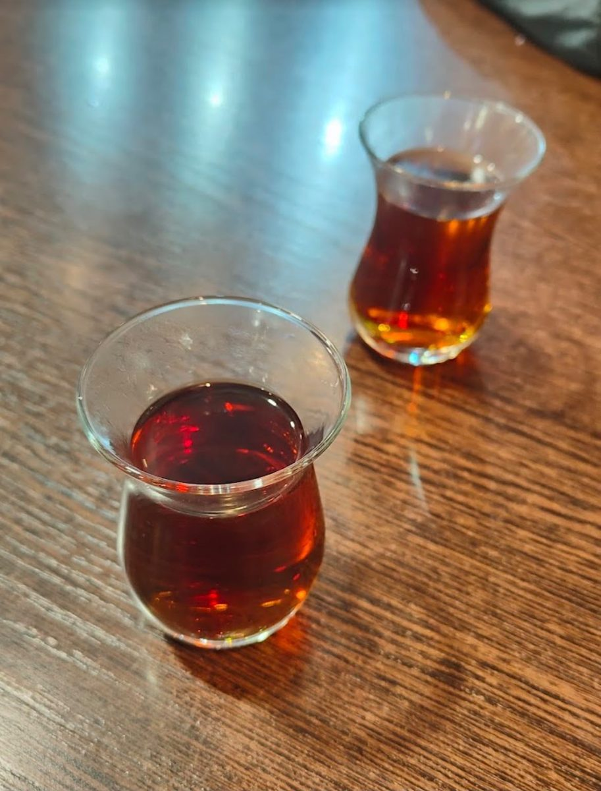

Frisch vom Drehspieß, mitten in der Osnabrücker Innenstadt – vom schnellen Döner in der Mittagspause bis zum Dürüm um drei Uhr nachts.
Am Neumarkt 5 – ein fester Teil der Osnabrücker Innenstadt, Generation für Generation.
Ab 10:30 Uhr, am Wochenende bis in den frühen Morgen. Kein Ruhetag.
Gelobt werden vor allem die Fleischqualität, die Soßen und die Portionen.
Speisekarte
Hähnchen und Kalb vom Drehspieß, dazu Klassiker aus dem Steinofen und eine ordentliche Auswahl für alle, die es ohne Fleisch mögen.
Auswahl aus der Karte. Die vollständige Karte mit allen aktuellen Preisen hängt im Laden aus und steht bei den Lieferdiensten unten. Fragen zu Allergenen und Zutaten beantworten wir gern direkt am Tresen oder am Telefon.
Der Laden
Offene Front zur Straße, der Spieß gleich hinter der Theke, Tische im hinteren Teil. Wer nach dem Döner noch sitzen bleibt, trinkt seinen Çay dazu.


Öffnungszeiten
Sieben Tage die Woche geöffnet. Donnerstag bis Samstag bleibt die Theke bis in den frühen Morgen auf – praktisch, wenn der Abend am Neumarkt länger wird.
| Montag | 10:30 – 02:00 |
| Dienstag | 10:30 – 06:00 |
| Mittwoch | 10:30 – 02:00 |
| Donnerstag | 10:30 – 06:00 |
| Freitag | 10:30 – 07:00 |
| Samstag | 10:30 – 07:00 |
| Sonntag | 10:30 – 02:00 |
An Feiertagen und bei Veranstaltungen am Neumarkt können die Zeiten abweichen. Im Zweifel kurz anrufen: 0541 2023153
Abholen & Liefern
Ruf durch und hol ab, ohne zu warten – oder lass dir das Essen über einen der Lieferdienste nach Hause bringen.
Kontakt & Anfahrt
Direkt am Neumarkt, wenige Schritte von den Bushaltestellen entfernt – und keine zehn Minuten vom Hauptbahnhof.